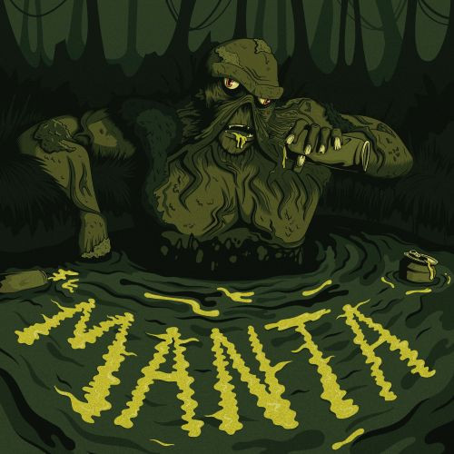

Todays Date is ...
I've been producing music for nearly a decade, starting as a passing
interest and eventually growing into an obsession in the last 5
years. I've been fortunate enough to have my music released on vinyl
and to have played gigs in both London and Bristol.
For the most part I produce dubstep, with my biggest influences being
Headland,
Causa
and
Digital Mystikz. I often dabble in Halftime Jungle too with
Homemade Weapons
and
TORN being
major influences. I'm drawn to genres with a lot of space, rhythm and
tension.

I find that the tracks I'm most happy with end up being the ones that
are started and finished within the space of a few days. The longer
it's drawn out, the harder it is to maintain the creative headspace
you were in when you first started, so having a frictionless creative
workflow is imperative. Ableton opens in a template I have iterated
over and over through the years, with my default channels for drums,
synths, fx etc. already set up with my go-to plug-ins. For
instance, having 2 separate reverb send channels; a large hall and a plate
reverb, allows me to send my instruments to reverbs with settings
already dialed in for the space they require.
Separating sound design and writing into their own sessions is another
massive help, there's nothing worse than getting hung up trying to
create the perfect bass sound for hours and squandering your creative
flow-state, making it harder to move forward with the musicality and
arrangement of the track. On days when I'm not feeling too creative, I
try and spend my time synthesizing bass sounds and creating
interesting distortion, reverb and delay patches, much like a painter
would mix a palette before starting a painting. Not only does this
save you the hassle of getting too fiddly when you're trying to write
and arrange tracks but also slowly nurtures your own signature sound
over time that sets you apart from your peers.
So far, I have been fortunate enough to have two releases pressed to vinyl, both EPs out on Encrypted Audio.